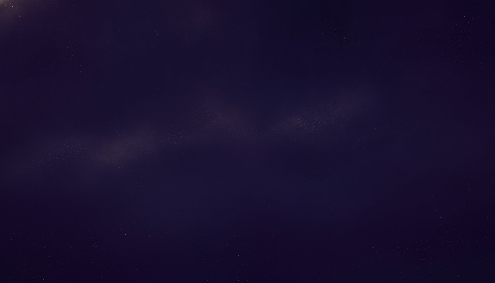

Risk-free, always
Trust should never be a leap of faith. Your first reading with a new psychic is protected. If it does not resonate, we make it right.
Three simple assurances
The guarantee exists so you can begin with an open mind. Here is exactly what it covers.
Try any psychic
Explore our psychics freely. When you connect with someone new, the safety net is already in place from your very first minute.
If it does not resonate
Sometimes the fit is not there, and that is alright. Tell Customer Care within 24 hours of a first paid reading with that psychic.
We make it right
We will credit the minutes back so you can try another psychic. Your search for the right voice costs you nothing but the asking.
Good to know
Who is covered by the guarantee?
How do I request a credit?
What form does the credit take?
Is there anything the guarantee does not cover?
Begin with nothing to lose but the question.
Meet your psychic, guaranteed.
New members read from $1 per minute, and your first reading is always risk-free.
Get Your ReadingNew members from $1/min · Satisfaction guaranteed.
Satisfaction guaranteed. For entertainment. 18+.